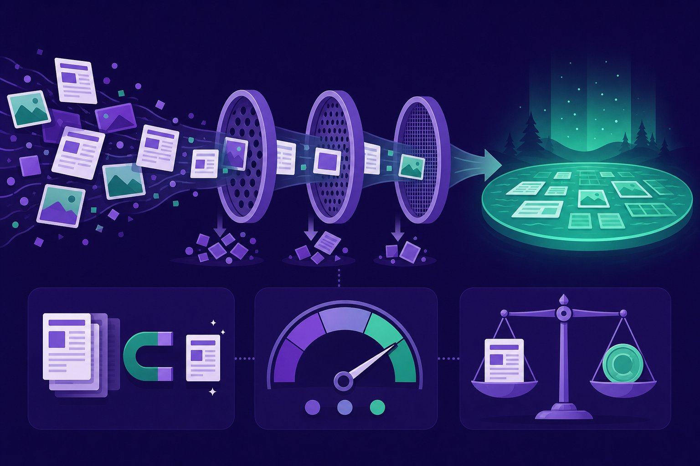

Training-data engineering
Models are what they eat. Behind every frontier model is a data refinery: crawling, filtering, deduping, and licensing trillions of tokens. Learn the pipeline, the quality math, and why provenance is now a board-level asset.

Figure 66.1 — Trillions in, billions kept. The refinery rejects 90%+ — quality is a subtraction game.
1. The refinery (crawl → keep)
- Extraction beats collection: boilerplate, nav bars, and SEO spam poison more than scarcity does. Text extraction quality is step zero.
- Filters stack: language ID, perplexity/quality classifiers, toxicity/PII screens, length and repetition heuristics — each tuned per domain.
- Mix weights are hyperparameters: code, books, web, and synthetic each get a share; ablate on downstream evals, not vibes (Ch 64).
2. Dedup & decontamination (the unglamorous 80%)
| Technique | Catches | Why it matters |
|---|---|---|
| Exact dedup (hashing) | Byte-identical copies | Memorisation + wasted compute |
| Fuzzy dedup (MinHash/LSH) | Near-copies, boilerplate, spun text | Diversity; the tail survives |
| Eval decontamination | Benchmark items (even paraphrased) in training | Without it, leaderboards are fiction |
| Canaries | Planted strings proving whether data was used | Auditability + leak detection (Ch 59) |
3. Rights & provenance (the new moat)
- Licence per row: public ≠ usable. Track licence/ToS at the document level; robots.txt and opt-outs are the floor, not the ceiling.
- Consent & compensation: publishers, artists, and communities are negotiating data deals — budget for licensed data like you budget GPUs.
- Datasheets: who collected it, when, from whom, with what filters, known gaps. Future-you (and regulators) will ask.
- Deletion readiness: if a source must be removed, can you find every derived row and retrain? Design for unlearning requests.
Contamination ruins science
One leaked benchmark in training invalidates every comparison you publish. Quarantine all eval material (and paraphrases) BEFORE the first training run, re-scan on every data refresh, and treat third-party “clean” mixes as guilty until proven innocent. A leaderboard built on contamination is marketing, not measurement.
Short notes
Refinery: crawl → extract → filter → dedup → decontaminate → mix, with provenance logged at every stage. Dedup exact + fuzzy; decontaminate evals (paraphrases too); plant canaries. Rights: licence per row, pay for data, write datasheets, stay deletion-ready. Quality is subtraction; mix weights are hyperparameters.
Point notes
- Extraction quality is step zero.
- Fuzzy dedup saves the tail.
- Quarantine evals first.
- Licence per row.
- Datasheets or it didn’t happen.
MCQs
5 questions1. Why dedup against EVAL sets specifically?
2. Fuzzy dedup (MinHash/LSH) catches what exact hashing misses:
3. “Mix weights are hyperparameters” means:
4. A planted canary string in training data lets you:
5. “Public ≠ usable” for training data because:
Practice questions
P1. Audit a 100GB web crawl for a Hindi-first model: stages, gates, and kill criteria.
Stages: extract (boilerplate removal, keep main content) → language ID (keep hi + en-mixed, drop mislabelled) → quality filters (perplexity, repetition, length) → exact + fuzzy dedup → PII/toxicity screens → eval decontamination. Gates: ≥60% Hindi-token share retained, dup rate <15% post-filter, zero eval n-gram hits above threshold. Kill criteria: >40% boilerplate, eval leakage unfixable, or licence status unknown for >20% of rows.
P2. A publisher demands removal of their articles from your training mix — after you’ve trained. What breaks, and what would you have done differently?
Breaks: you must locate every derived row (raw + paraphrases + synthetic children), remove, retrain or unlearn, and re-eval — weeks of work without provenance tooling. Differently: per-row licence + source tracking from day one, licensed-data budget, robots/opt-out honoring, deletion-ready pipeline (shard training so single-shard removal is cheap), datasheets documenting every source.
P3. Your ablation shows +2% code share improves reasoning evals but hurts Hindi chat. Decide the mix.
No free lunch: pick by product priority with guardrail metrics (no language may regress >1pt). Options: keep code bump but upweight Hindi chat slice to compensate; or stage it (code-heavy mid-training, Hindi-heavy anneal). Document the trade-off in the datasheet, re-check on native-authored Hindi tests (not translated), and ship the Pareto mix — not the reasoning-max one.